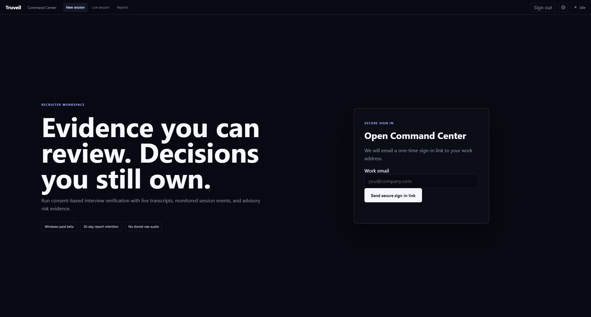
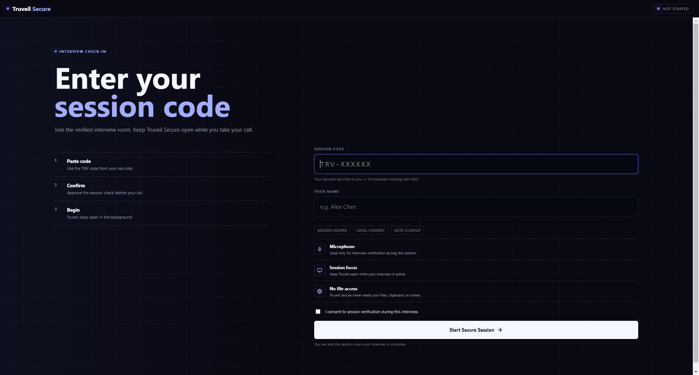

Tell me about a difficult production incident you helped resolve.
Interview verification for careful teams
See the interview as it happens.
Live transcript, exact session events, interviewer notes, and evidence-first review in one focused recruiter workspace.
Windows paid beta
No stored raw audio
Advisory evidence, not accusations
TranscriptStreaming
Evidence3 events
SourceDeepgram live
Live transcriptInterim text
Interviewer workflow
Follow-up question suggested
Ask the candidate to explain the queue tradeoff using a different example.
One operating view
Signal arrives live. Context stays attached.
Transcript evidence and monitored behavior remain separate, so interviewers can understand what happened without treating a score as truth.

Foreground monitoring
Restricted destinationchatgpt.comClosed + reported
Meeting toolmeet.google.comAllowed
Foreground appVisual Studio CodeReview event
Transcript relayDeepgram streamingHealthy
Reviewable transcript evidence
“I first rolled back the release, then realized the queue consumers were still holding the old schema. We drained those, replayed the failed jobs, and added a compatibility check afterward.”
Latest response
Transcript context available
Specific sequence and grounded remediation details are preserved for interviewer review. Transcript patterns never override observed behavior.
A deliberate workflow
Set policy. Share code. Stay in control.
- 01
Configure the session
Select allowed meeting tools and restricted destinations before the candidate joins.
- 02
Candidate consents
Truveil Secure explains the session check, requests microphone access, and joins with a short-lived code.
- 03
Review live evidence
See transcript health, exact foreground changes, and restricted-destination events as they happen.
- 04
Export a careful report
The report preserves transcript and event evidence while making clear that the assessment is probabilistic.

Candidate-respectful by design
Strong verification should still be understandable.
Candidates consent before monitoring begins. Raw fallback audio is deleted after transcription. Reports retain evidence for 30 days by default and can be deleted sooner.
- Explicit session consent
- Clear restricted-site policy
- No hidden certainty claims
- Desktop-only enforcement disclosed honestly